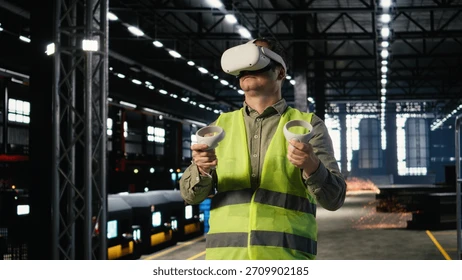

Revolución en el sector industrial y del entretenimiento
La combinación de la RV y la RA está redefiniendo tanto los procesos productivos dentro de la Industria 4.0 como las experiencias de ocio a nivel global. En las fábricas modernas, los operarios usan gafas de RA para ensamblar maquinaria compleja recibiendo instrucciones visuales superpuestas directamente en su campo de visión.
En el mantenimiento industrial, los técnicos en campo pueden consultar manuales esquemáticos interactivos o conectarse remotamente con expertos internacionales que ven exactamente lo mismo que el técnico, reduciendo drásticamente los tiempos de inactividad operativa.
Por su parte, la industria del entretenimiento ha llevado los videojuegos, eventos deportivos y conciertos a una nueva dimensión inmersiva. Los usuarios ya no son meros espectadores pasivos, sino participantes activos dentro de universos virtuales generados por ordenador.
Impacto en los Sectores Productivos
- Prototipado virtual de automóviles y aeronaves previo a la fase de fabricación.
- Asistencia técnica remota y mantenimiento guiado por pasos interactivos en RA.
- Videojuegos con seguimiento posicional completo y simulación física realista.
- Cine inmersivo y experiencias cinematográficas de 360 grados.

Comparativa Industrial y de Ocio
| Compañía / Solución | Sector | Función Principal |
|---|---|---|
| Microsoft HoloLens 2 | Industria / Manufactura | Mantenimiento guiado y diseño de ingeniería en 3D |
| Unreal Engine 5 VR | Entretenimiento / Videojuegos | Motor gráfico para simulaciones y juegos inmersivos |
| IKEA Studio App | Comercio / Retail | Visualización de muebles a escala real en el hogar usando RA |